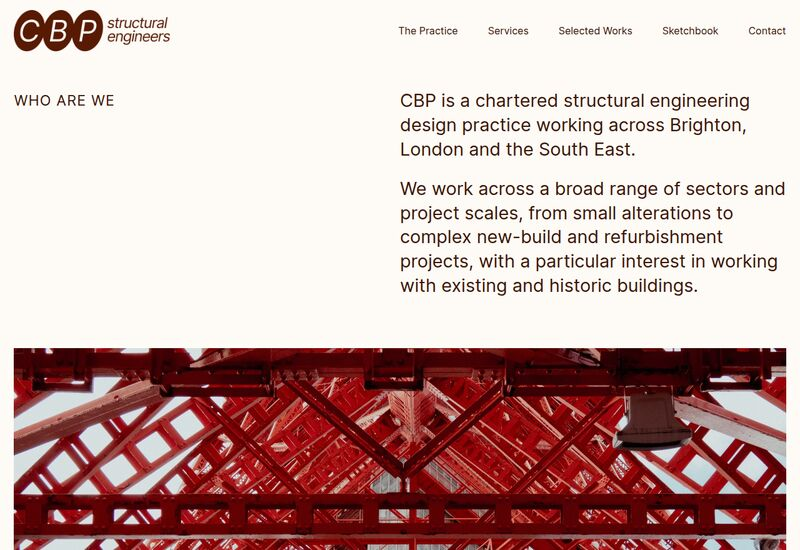
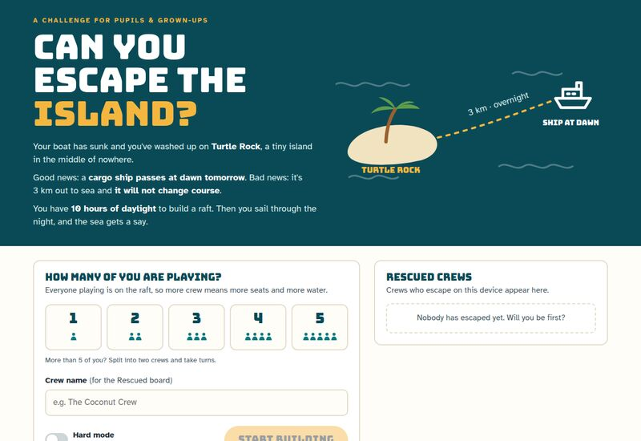
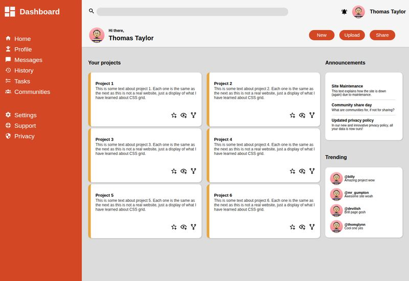
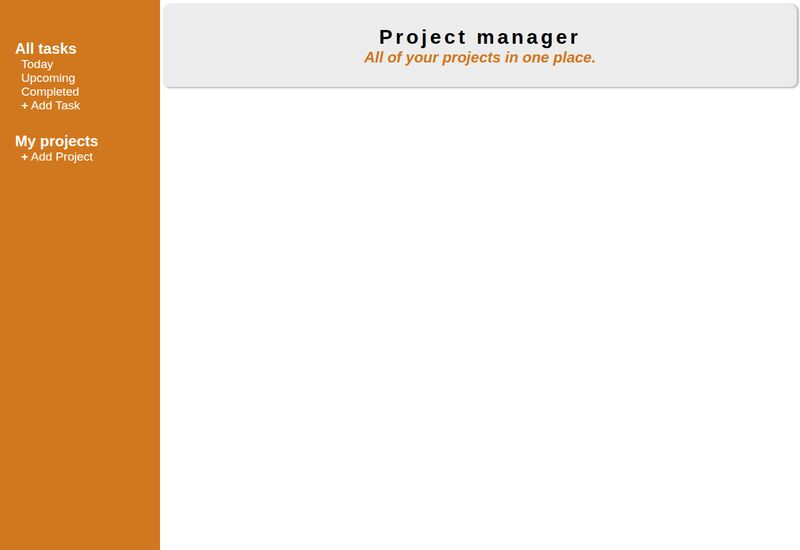

CBP Website


A portfolio site for a structural engineering practice, showing off their services & past work.

I'm a web developer working my way through The Odin Project, building sites & apps with HTML, CSS and JavaScript. Most recently I built the website for CBP, a structural engineering practice, and Escape the Island, a problem-solving game for school open days. Along the way I've picked up webpack, testing with Jest and a fair bit about data structures. I really enjoy building things people actually get to use.


A portfolio site for a structural engineering practice, showing off their services & past work.

A raft-building problem-solving game for school open days. Play it in the browser or print the tabletop version.

A dashboard layout with a sidebar, project cards & announcements, built with CSS grid.

The classic game of battleships, played in the browser against the computer. Tested with Jest.

A to-do app for sorting tasks into projects, with today, upcoming & completed views.

A restaurant site with tabbed pages, rendered with JavaScript and bundled with webpack.